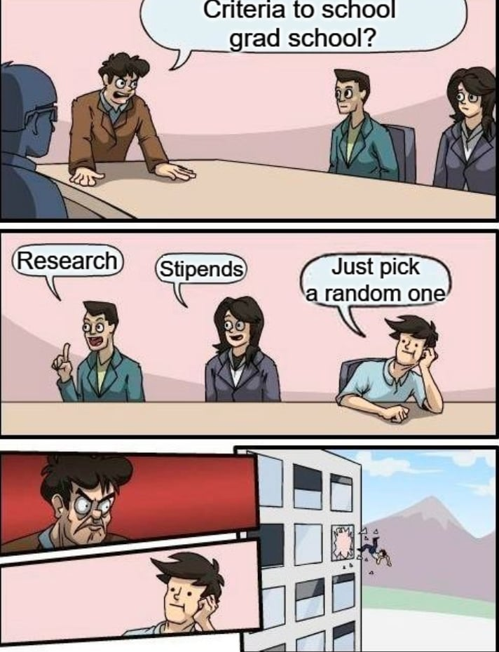

By reading this section, you will be able to answer the following questions:
- Why should I care about building a school list?
- Where should I start?
- Top-down approach: Elimination Process. What should the algorithm be?
- What should I do after having a list of schools I want to apply to?
For me, this is the most important part of the pre-application process. One can be a rock-star mathematician and get into no programs due to inappropriate school selection. I did not consider myself as the smartest in the application pool. I just intentionally chose the school that I could imagine myself as a(n) (important) part of their community.

“Graduate school is not just about ranking!” - I would be lying if I shared that advice. Yes, graduate school should never be “only” about ranking, but I also admit that ranking matters a lot later in your career. That’s where I start - pull a list of top 100 Mathematics programs in the US and start with it.
Then, my suggested algorithm proceed as follows:
Stage 1: Eliminate the “Definitely-Not”
- Does the school require you to submit your GRE General and Math GRE?
- Location: This is a filter for those who have a geographical reference like I did. By location I filtered everything by State > City > Local Community.
- Funding: we’re all adults, so let’s talk about money. Consider the public information of the stipends, my
point of view is:
- If the school makes you pay for your PhD, eliminate it.
- If the school barely pays enough to cover your housing, insurance, transportation, food, etc., eliminate it. If you can’t focus on your PhD because you need to work 3 more jobs to get food on your table, you should look for a job, not a PhD.
- Note: You don’t aim to get rich by doing your PhD. Stipends are an important part, but they are also negotiable!
- If your undergraduate professor attended the school - keep it on the list. It will survive this round (no brainer), and you can later eliminate it if possible.
Stage 2: The Academic Filter
- Have a look at the coursework, do they excite you? Does the school offer 10 courses in Algebra and 3 courses in Analysis, or is it a mix of everything? Are there lots of special topics offered?
- Since I am applying directly to a PhD program without a Masters, coursework weighs a bit in my selection criterias. However, graduate school is not about just taking courses, and in fact the teaching quality might not be what you expected (this is the advice from my advisors).
- What is more important? Qualifying exams.
- How many qualifying exams are you required to take before advancing into a PhD candidate? Some schools require 6, some require only 2. And even if they require you to take lots of exams, they might not be all sitting exams. Some schools let you use your coursework as an exam, so read it carefully!
- How many attempts can you take for each exam? Some schools let you take unlimited attempts (as long as you pass before your 3rd year, for example), some only allow 2 (and if you still fail then bye).
- If you fail your qualifying exam, can you graduate with a Masters degree instead?
Stage 3: The research filter
- Have a look at the research groups, even though you did not specifically know what you want to do (this
seems to be the case for fresh undergraduate students).
- Is the school focused totally on Pure or Applied Math? Algebra only or a mix with Analysis?
- How many professors are working within one group? Are they working together on one category or independently on different topics?
- Are different groups collaborating together? Is there any cross-department collaboration?
- This is my graduate school advisor saying on a research topic: “You cannot just read the description and
know immediately what you want to do. Talk to them!”
- Don’t spend too much time reading professors' research papers. Instead, write 1-2 paragraphs summarizing what they are doing. You don’t try to understand the details, but understand your future options if you go to the school
- I’m not sure if reaching out to professors and talking to them helps that much in the application process. They are busy. I reached out to lots of professors, and 50% of them responded to me (honestly, this response rate is high), but only one program accepted me. You can leave them your application ID for future consideration, but honestly I’m not sure if it helps
- What I know for sure would help is that you reach out to their graduate students. Don’t
just ask about research, but…
- Academic culture: Is the group fun to work with? Do people work independently or collaboratively? Etc.
- Professor’s style of mentoring
- Publication quota (I don’t think this is common in the US)
- Reaching out to students helps you understand the school better, which also helps for your Statement of Purpose/ Personal Essay
Hopefully after 3 stages, you will have a list of 15-20 schools. The next steps would be:
- Classifying school by confidence of success. This is very subjective, and I have no further tips to share.
- List all the applications requirements, focus on how many/much:
- How many essays are required? How many words are allowed?
- How many letters of recommendation are required?
- Is there a separate financial aid application required?
- Do I have to indicate a/some research group(s)/ professor(s) of interest?
- How much do they pay for 9 months/ 12 months?
- What is the application deadline for all materials and letters of recommendation?
Once your school list is finished (and you will likely update this list as you go along with the application process), the game officially starts.